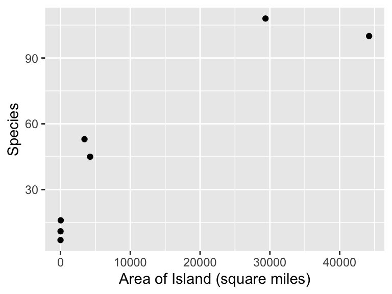

library(ggformula) # graphics
library(Sleuth3) # Sleuth data sets
library(broom) # extract pieces of lm output
library(gridExtra) # arrange multiple plots on a page4 A Closer Look at the Assumptions for Simple Linear Regression
5 Introduction
This document is intended to help describe how to undertake analyses introduced as examples in the Third Edition of the Statistical Sleuth (2013) by Fred Ramsey and Dan Schafer. More information about the book can be found at http://www.proaxis.com/~panorama/home.htm.
This work adapts work done by Linda Loi, Ruobing Zhang, Kate Aloisio, and Nicholas J. Horton. Their work leveraged initiatives undertaken by Project MOSAIC (http://www.mosaic-web.org), an NSF-funded effort to improve the teaching of statistics, calculus, science and computing in the undergraduate curriculum.
In this chapter we need to load the following packages (remember, you will need to install packages you have never used before if you are using your own computer).
We will also set some options to improve legibility of graphs and output.
options(digits=4) # display four significant digits by default6 Island Area and Number of Species
What is the relationship between the area of islands and the number of animal and plant species living on them? This is the question addressed in case study 8.1 in Sleuth.
6.1 Summary statistics and graphical display
We begin by reading the data and summarizing the variables.
summary(case0801) Area Species
Min. : 1.0 Min. : 7.0
1st Qu.: 18.5 1st Qu.: 13.5
Median : 3435.0 Median : 45.0
Mean :11615.1 Mean : 48.6
3rd Qu.:16807.5 3rd Qu.: 76.5
Max. :44218.0 Max. :108.0 A total of 7 islands are included in this data as displayed in Display 8.1 (page 208). We can then observe the relationship between the area and the number of species for these islands with a scatterplot, akin to the top figure in Display 8.2 (page 209).
gf_point(Species ~ Area, data = case0801) %>%
gf_labs(x = "Area of Island (square miles)")
It appears that the relationship with the observed values is not linear, one way to address this issue is to transform the variables. Below is a scatterplot where both variables have been log transformed.
gf_point(log(Species) ~ log(Area), data = case0801) %>%
gf_lm() %>%
gf_labs(x = "Area of Island (square miles) (log scale)",
y = "Species (log scale)")Warning: Using the `size` aesthetic with geom_line was deprecated in ggplot2 3.4.0.
ℹ Please use the `linewidth` aesthetic instead.6.2 Simple Linear Model
We first fit the model for \(\mu\{\log(Species)|\log(Area)\} = \beta_0 + \beta_1 \cdot\log(Area)\). This can be done by applying the log transformation directly in the lm() statement.
lm1 <- lm(log(Species) ~ log(Area), data = case0801)
summary(lm1)
Call:
lm(formula = log(Species) ~ log(Area), data = case0801)
Residuals:
1 2 3 4 5 6 7
-0.002136 0.176975 -0.215487 0.000947 -0.029244 0.059543 0.009402
Coefficients:
Estimate Std. Error t value Pr(>|t|)
(Intercept) 1.9365 0.0881 22.0 3.6e-06 ***
log(Area) 0.2497 0.0121 20.6 5.0e-06 ***
---
Signif. codes: 0 '***' 0.001 '**' 0.01 '*' 0.05 '.' 0.1 ' ' 1
Residual standard error: 0.128 on 5 degrees of freedom
Multiple R-squared: 0.988, Adjusted R-squared: 0.986
F-statistic: 425 on 1 and 5 DF, p-value: 4.96e-06Note: an alternative approach is to create transformed variables in the data set. This is easily done using the mutate() command in the dplyr package:
case0801 <- mutate(case0801, logspecies = log(Species), logarea = log(Area))
lm1 <- lm(logspecies ~ logarea, data = case0801)Thus our estimated equation becomes, \(\widehat{\mu} \{\log(Species)|\log(Area)\} = 1.94 + 0.25 \log(Area)\). Next, we calculate the 95% confidence interval for the estimates, note that the logarea 95% confidence interval is interpreted in the “Statistical Conclusion” on page 208:
confint(lm1) 2.5 % 97.5 %
(Intercept) 1.7100 2.1631
logarea 0.2186 0.2808To interpret this log-log model the Sleuth notes that if \(\widehat{\mu} \{\log(Species)|\log(Area)\} = \beta_0 + \beta_1 * \log(X)\) then \(\text{median}\{Y|X \} = \exp(\beta_0)X^{beta_1}\) (page 217). For this example the researchers are interested in a doubling effect (\(2\beta_1\)). Therefore to obtain the 95% confidence interval for the multiplicative factor in the median we used the following code:
2^confint(lm1) 2.5 % 97.5 %
(Intercept) 3.272 4.479
logarea 1.164 1.215Thus for this model the estimated median number of species is 1.19 (\(2^{0.25}\)) with a 95% confidence interval between (1.16, 1.21). These match the numbers found on page 217.
6.3 Assessment of Assumptions
First we will have to assume independence from the information given. As seen in the above Q-Q plots, the observations for each variable were not normally distributed, once we performed a log transformation the distribution of the values became more approximately normal. While it can be useful to check the distribution of the response variable prior to modeling, it’s still important to check the distribution of the residuals.
Next, we can check for linearity of the mean function, \(\widehat{\mu} \{\log(Species)|\log(Area)\}\) using either a plot of the residuals vs. the fitted values or a plot of the residuals vs. \(\log(Area)\) (these will provide the same information). Using the ggformula toolkit, we first create an augmented data set where we add the residuals and fitted values.
aug1 <- augment(lm1)
res1 <- gf_point(.resid ~ .fitted, data = aug1) %>%
gf_hline(yintercept = 0, col = "blue", lty = 2) %>%
gf_labs(x = "Fitted values", y = "Residuals", title = "Residuals vs. fitted values")
res2 <- gf_point(.resid ~ logarea, data = aug1) %>%
gf_hline(yintercept = 0, col = "blue", lty = 2) %>%
gf_labs(x = "Fitted values", y = "Residuals", title = "Residuals vs. fitted values")
grid.arrange(res1, res2, ncol = 2)The residual plot shows no apparent curavture, so the assumption of linearity appears to be valid. Additionally, there are no signs of non-constant variance (don’t over-interpret the two larger residuals here, with so few points this is more likely due to sampling variability).
To finish, we examine the distribution of the standardized residuals. The Q-Q plot exhibits no substantial deviations from the assumption of normality.
gf_qq(~.std.resid, data = aug1) %>%
gf_qqline() %>%
gf_labs(x = "N(0, 1) quantiles", y = "Standardized residuals")7 Breakdown Times for Insulating Fluid Under Different Voltages
How does the distribution of breakdown time depend on voltage? This is the question addressed in case study 8.2 in the Sleuth.
7.1 Summary statistics and graphical display
We begin by reading the data and summarizing the variables.
summary(case0802) Time Voltage Group
Min. : 0.09 Min. :26.0 Group1: 3
1st Qu.: 1.62 1st Qu.:31.5 Group2: 5
Median : 6.92 Median :34.0 Group3:11
Mean : 98.56 Mean :33.1 Group4:15
3rd Qu.: 38.38 3rd Qu.:36.0 Group5:19
Max. :2323.70 Max. :38.0 Group6:15
Group7: 8 A total of 76 samples of insulating fluids are included in this data. Each sample was placed in one of 7 groups representing different degrees of voltage. Each group varied in sample size as shown in Display 8.4 (page 211). Below is a version of Display 8.4 rendered in R (and without the dual y-axis).
gf_point(log(Time) ~ Voltage, data = case0802) %>%
gf_lm() %>%
gf_labs(x = "Voltage Level (kV)", y = "Breakdown Time (minutes) (log scale)") %>%
gf_refine(scale_x_continuous(breaks = seq(26, 38, by = 2)))To see why a log transformation was initially proposed for breakdown time, consider the histogram of breakdown times (left).
h3 <- gf_histogram(~Time, data = case0802, bins = 10)
h4 <- gf_histogram(~log(Time), data = case0802, bins = 10)
grid.arrange(h3, h4, ncol = 2)The distribution of Time is highly skewed with a long right tail. In such cases, the natural log often helps “normalize” the variables (as seen on the right).
7.2 Simple linear regression models
The model that the researchers want to analyze is \(\mu \{\log(Time)|Voltage\} = \beta_0 + \beta_1 \cdot Voltage\).
lm2 <- lm(log(Time) ~ Voltage, data = case0802)
summary(lm2)
Call:
lm(formula = log(Time) ~ Voltage, data = case0802)
Residuals:
Min 1Q Median 3Q Max
-4.029 -0.692 0.037 1.209 2.651
Coefficients:
Estimate Std. Error t value Pr(>|t|)
(Intercept) 18.9555 1.9100 9.92 3.1e-15 ***
Voltage -0.5074 0.0574 -8.84 3.3e-13 ***
---
Signif. codes: 0 '***' 0.001 '**' 0.01 '*' 0.05 '.' 0.1 ' ' 1
Residual standard error: 1.56 on 74 degrees of freedom
Multiple R-squared: 0.514, Adjusted R-squared: 0.507
F-statistic: 78.1 on 1 and 74 DF, p-value: 3.34e-13The estimated model is \(\widehat{\mu} \{\log(Time)|Voltage\} = 18.96 -0.51 \log(Area)\). The \(R^2\) for the model is 51.36%, as discussed on page 222. To interpret the model we first exponentiate the estimated coefficients because the response variable is logged, as shown on page 216.
exp(coef(lm2))(Intercept) Voltage
1.707e+08 6.021e-01 A 1 kV increase in voltage is associated with a multiplicative change in the median breakdown time of 0.6.
Next we can calculate 95% confidence intervals for the slope and intercept. (Remember that we still need to exponentiate the output in order to interpret it.)
exp(confint(lm2)) 2.5 % 97.5 %
(Intercept) 3.797e+06 7.675e+09
Voltage 5.370e-01 6.750e-01The 95% confidence interval for the multiplicative change in median breakdown time is (0.54, 0.68), as seen on page 216.
Next, we can assess the fit using the Analysis of Variance (ANOVA) as outlined in section 8.5. The ANOVA results below match those in the top half of Display 8.8 (page 219).
anova(lm2)Analysis of Variance Table
Response: log(Time)
Df Sum Sq Mean Sq F value Pr(>F)
Voltage 1 190 190.2 78.1 3.3e-13 ***
Residuals 74 180 2.4
---
Signif. codes: 0 '***' 0.001 '**' 0.01 '*' 0.05 '.' 0.1 ' ' 1We can then compare this with a model with separate means for each group.
lm3 <- lm(log(Time) ~ as.factor(Voltage), data = case0802)
summary(lm3)
Call:
lm(formula = log(Time) ~ as.factor(Voltage), data = case0802)
Residuals:
Min 1Q Median 3Q Max
-3.868 -0.819 0.074 1.122 3.143
Coefficients:
Estimate Std. Error t value Pr(>|t|)
(Intercept) 5.624 0.916 6.14 4.7e-08 ***
as.factor(Voltage)28 -0.294 1.159 -0.25 0.80019
as.factor(Voltage)30 -1.802 1.034 -1.74 0.08571 .
as.factor(Voltage)32 -3.395 1.004 -3.38 0.00118 **
as.factor(Voltage)34 -3.838 0.986 -3.89 0.00023 ***
as.factor(Voltage)36 -4.722 1.004 -4.70 1.3e-05 ***
as.factor(Voltage)38 -6.048 1.074 -5.63 3.6e-07 ***
---
Signif. codes: 0 '***' 0.001 '**' 0.01 '*' 0.05 '.' 0.1 ' ' 1
Residual standard error: 1.59 on 69 degrees of freedom
Multiple R-squared: 0.531, Adjusted R-squared: 0.49
F-statistic: 13 on 6 and 69 DF, p-value: 8.87e-10This model has a F-statistic of 13 with a p-value < 0.0001, as shown in the bottom half of Display 8.8 (page 218).
anova(lm3)Analysis of Variance Table
Response: log(Time)
Df Sum Sq Mean Sq F value Pr(>F)
as.factor(Voltage) 6 196 32.7 13 8.9e-10 ***
Residuals 69 174 2.5
---
Signif. codes: 0 '***' 0.001 '**' 0.01 '*' 0.05 '.' 0.1 ' ' 1Note that the values for the Residuals can also be found in the bottom half of Display 8.8 (page 219).
The F-statistic and its associated p-value for the lack-of-fit discussion on page 220 can be calculated by comparing the two models with an ANOVA.
anova(lm2, lm3)Analysis of Variance Table
Model 1: log(Time) ~ Voltage
Model 2: log(Time) ~ as.factor(Voltage)
Res.Df RSS Df Sum of Sq F Pr(>F)
1 74 180
2 69 174 5 6.33 0.5 0.777.3 Assessment of Assumptions
First we will have to assume independence for the information given.
Next, we can check for linearity. The following figure is akin to the right panel in Display 8.14 (page 226).
aug2 <- augment(lm2)
gf_qq(~.std.resid, data = aug2) %>%
gf_qqline() %>%
gf_labs(x = "Normal quantiles", y = "Standarized residuals")The points on the Q-Q plot are close enough to the straight line that we can assume the assumption of normally distribution residuals is reasonable.
To assess linearity and constant error variance (i.e. homoscedasticity) we turn to a residual plot.
gf_point(.resid ~ .fitted, data = aug2) %>%
gf_hline(yintercept = 0, linetype = 2, color = "blue") %>%
gf_labs(x = "Fitted values", y = "Residuals")There is no apparent curvature seen on the residual plot; however, the variability does not appear to be constant across all of the fitted values (or Voltage if you plot the residuals vs. X).
8 Other transformations
Sleuth also discusses the use of a square root transformation for the breakdown time. The following figure is a scatterplot of the square root of breakdown time versus voltage, as seen in the left figure in Display 8.7 (page 215).
gf_point(sqrt(Time) ~ Voltage, data = case0802) %>%
gf_lm() %>%
gf_labs(x = "Square root of breakdown time", y = "Voltage")We can assess this transformation by observing the residual plot based on the simple linear regression fit, as seen in the right figure in Display 8.7 (page 215).
lm4 <- lm(sqrt(Time) ~ Voltage, data = case0802)
summary(lm4)
Call:
lm(formula = sqrt(Time) ~ Voltage, data = case0802)
Residuals:
Min 1Q Median 3Q Max
-15.285 -3.711 0.142 2.040 30.514
Coefficients:
Estimate Std. Error t value Pr(>|t|)
(Intercept) 61.784 7.777 7.94 1.6e-11 ***
Voltage -1.696 0.234 -7.26 3.3e-10 ***
---
Signif. codes: 0 '***' 0.001 '**' 0.01 '*' 0.05 '.' 0.1 ' ' 1
Residual standard error: 6.35 on 74 degrees of freedom
Multiple R-squared: 0.416, Adjusted R-squared: 0.408
F-statistic: 52.7 on 1 and 74 DF, p-value: 3.25e-10If we only wish to access the residuals and fitted values, we can actually use the fitted linear model as our data set. This no longer works if want standardized residuals or to plot the residuals against other variables, so it’s wise to use agument() if you think that you might forget this restriction.
gf_point(.resid ~ .fitted, data = lm4) %>%
gf_hline(yintercept = 0, linetype = 2, color = "blue") %>%
gf_labs(x = "Fitted values", y = "Residuals")